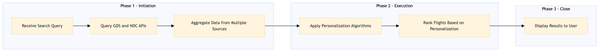

This process document outlines the structured approach for processing and aggregating flight search queries within an OTA platform, focusing on search ranking and personalization.
| Trigger | User initiates a flight search query through the Expedia Open World platform |
| Outcome | Successful completion produces a personalized list of flights with optimized rankings based on user preferences and availability data. |
| Systems | Expedia Open World Amadeus NDC API Sabre GDS Travelport Snowflake AWS SageMaker |

Click to enlarge
| Step | Name & Pain Point | Role | System | Input | Output | KPI | Flags |
|---|---|---|---|---|---|---|---|
| 1.1 | Receive Search Query Handling high volume of concurrent searches |
Platform Engineer | Expedia Open World | User search parameters (destination, dates, passengers) | Parsed search query data | Search response under 800ms | ⚠ Exception |
| 1.2 | Query GDS and NDC APIs GDS outage impacting availability |
Integration Engineer | Amadeus NDC API, Sabre GDS, Travelport | Parsed search query data | Flight availability and pricing data | Data retrieval accuracy over 95% | ⚠ Exception |
| 1.3 | Aggregate Data from Multiple Sources Handling inconsistent data formats |
Data Engineer | Snowflake, Apache Kafka | Flight availability and pricing data | Aggregated flight data | Data aggregation time under 200ms | ⚠ Exception |
| 1.4 | Apply Personalization Algorithms Balancing personalization with search relevance |
Machine Learning Engineer | AWS SageMaker | Aggregated flight data, user profile | Personalized flight recommendations | Personalization accuracy over 80% | ⚠ Exception |
| 1.5 | Rank Flights Based on Personalization Dynamic ranking based on real-time data |
Data Scientist | Tableau, Snowflake | Personalized flight recommendations | Ranked list of flights | Search ranking accuracy over 75% | ⚠ Exception |
| 1.6 | Display Results to User Ensuring a seamless user experience |
Frontend Developer | Expedia Open World | Ranked list of flights | User interface displaying flight search results | User satisfaction score over 4.5/5 | ⚠ Exception |